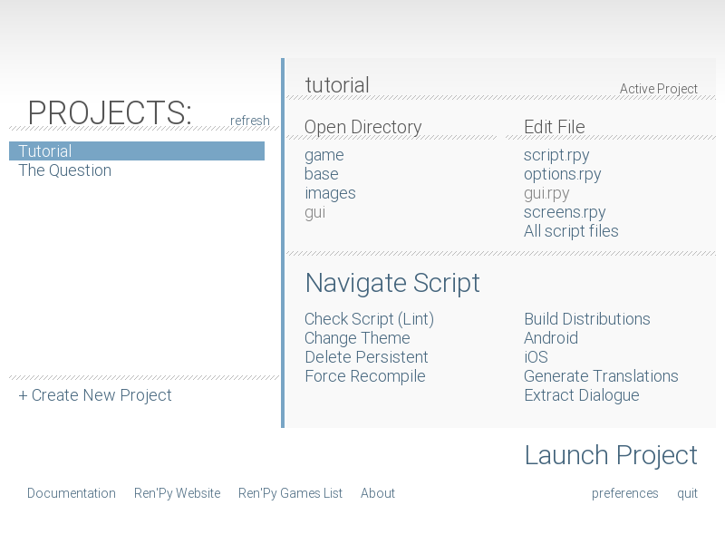
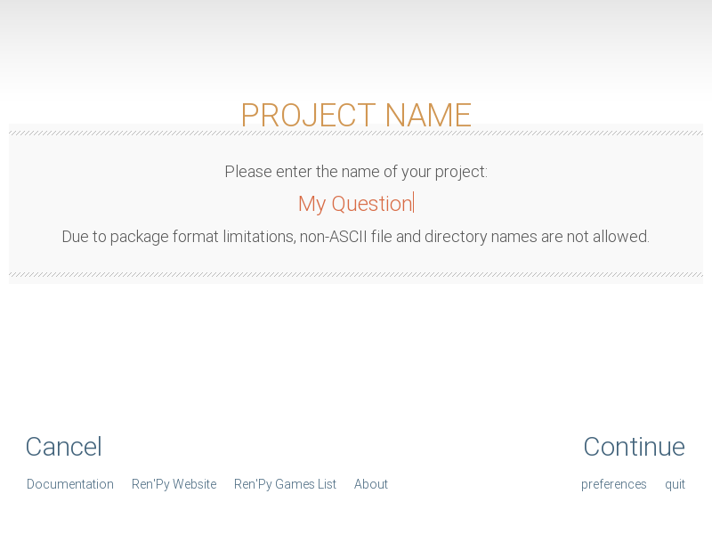
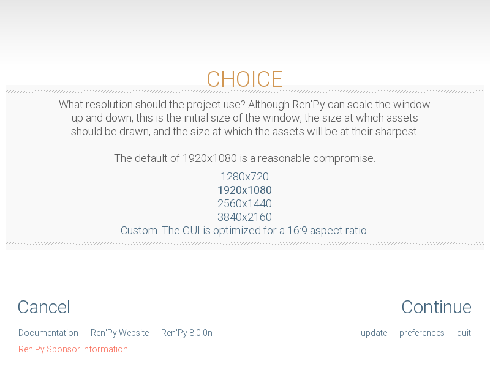
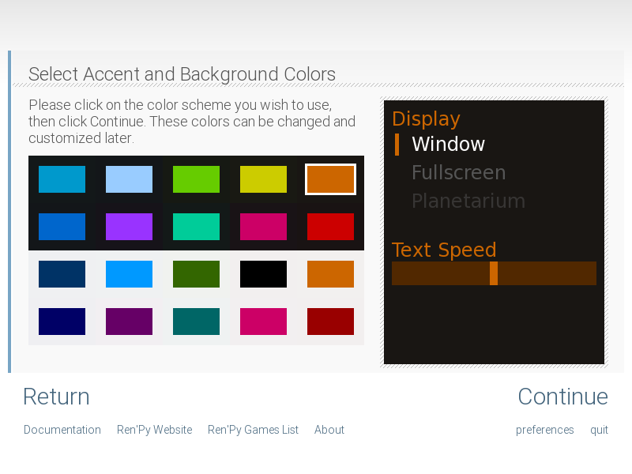

Краткое руководство
Добро пожаловать в краткое руководство по Ren'Py. Цель этого руководства — показать, как создать игру на Ren'Py с нуля за несколько простых шагов. Мы сделаем это на примере простой игры The Question («Вопрос»).
Лаунчер Ren'Py
Прежде чем приступать к созданию игры, стоит уделить немного времени изучению лаунчера Ren'Py. Лаунчер позволяет создавать, настраивать, редактировать и запускать проекты Ren'Py.
Начало работы. Для начала вам потребуется скачать Ren'Py.
После загрузки архива распакуйте и запустите его:
В Windows дважды кликните по загруженному исполняемому файлу. Он распакует Ren'Py в папку
renpy-<версия>. Перейдите в эту папку и запуститеrenpy.exe(или простоrenpy, если скрыты расширения файлов).В macOS дважды кликните по загруженному образу диска (.dmg). Когда диск смонтируется, скопируйте папку
renpy-<версия>в любое удобное место (например, в «Программы» или «Документы»). Не извлекайте приложение renpy из его папки — иначе оно не сможет работать. Затем откройте папку и запустите приложениеrenpy.В Linux распакуйте архив tar.bz2, перейдите в каталог
renpy-<версия>и запустите скриптrenpy.sh.
После этого откроется лаунчер Ren'Py.
Лаунчер переведён на множество языков. Чтобы переключить язык интерфейса, выберите пункт «Настройки» («Preferences») в правом нижнем углу и выберите желаемый язык.
Выбор и запуск проекта. Полезно сначала взглянуть на то, как выглядит готовая игра The Question. Для этого запустите лаунчер, выберите «The Question» в списке проектов на главном экране и нажмите «Запустить проект» («Launch Project»).
Вы также можете запустить обучающий проект-демонстрацию Ren'Py, выбрав проект «Tutorial».


Главный экран лаунчера Ren'Py.


Ввод имени нового проекта.


Выбор разрешения экрана проекта.


Выбор акцентного цвета и фона для стандартной темы интерфейса.
Создание нового проекта. Создайте новый проект, нажав кнопку «Создать новый проект» («Create New Project») в лаунчере.
Если вы создаёте проект впервые, Ren'Py может попросить выбрать каталог проектов. Это папка, в которой создаются новые проекты и в которой лаунчер ищет существующие. Окно выбора папки может открыться под окном лаунчера, обратите на это внимание.
Затем лаунчер попросит ввести имя проекта. Поскольку имя "The Question" уже занято, введите другое имя, например "My Question", и нажмите клавишу Enter.
После этого лаунчер предложит выбрать разрешение экрана проекта. Разрешение 1280x720 является отличным балансом между качеством графики и размером файлов игры. Для целей данного руководства мы выберем 1280x720 (под размер графики игры "The Question") и нажмём «Продолжить» («Continue»).
Затем лаунчер предложит выбрать цветовую схему — акцентный цвет и фон для стандартного пользовательского интерфейса (GUI). Выберите понравившуюся комбинацию и нажмите «Продолжить».
Ren'Py обработает настройки и сгенерирует готовый шаблон игры. Шаблон использует заглушки графики и текста, но уже является полностью рабочей игрой с поддержкой сохранений, загрузок, отката назад (rollback) и меню настроек. Нажмите «Запустить проект», чтобы проверить его в работе.
Простая игра
label start:
"Сильви" "Привет! Как прошли уроки?"
"Я" "Нормально..."
"Не могу заставить себя признаться, что всё в одно ухо влетело, а в другое вылетело."
"Я" "Ты сейчас домой? Хочешь пойти со мной?"
"Сильви" "Конечно!"
Это простейшая игра на Ren'Py. В ней пока нет картинок и музыки, но уже есть диалог между двумя персонажами и строка авторского повествования.
Чтобы опробовать этот пример, выберите проект "My Question" в лаунчере и в разделе
«Редактировать файл» («Edit File») нажмите на script.rpy. Если вы делаете это
впервые, Ren'Py предложит выбрать текстовый редактор. Мы рекомендуем Visual Studio Code —
лаунчер может автоматически скачать и настроить его для вас. После этого файл откроется
в редакторе.
Когда редактор откроется, сотрите всё содержимое script.rpy (мы начинаем с чистого
листа). Скопируйте приведённый выше пример кода в script.rpy и сохраните файл.
Теперь всё готово для запуска. Вернитесь в лаунчер и нажмите «Запустить проект». Игра запустится! Обратите внимание, что без каких-либо дополнительных усилий с вашей стороны Ren'Py уже предоставил вам главное меню, сохранение и загрузку игры, а также экран настроек. Пройдите этот тестовый диалог до конца.
В этом примере показаны базовые операторы языка Ren'Py:
Первая строка — это оператор label (метка). Он присваивает имя
определённой точке в коде сценария. В данном случае мы создали метку с именем start.
Метка start особенная: именно с неё Ren'Py начинает выполнение сценария, когда игрок
нажимает «Начать игру» в главном меню.
Остальные строки — это операторы say (реплики диалога). Существует две формы оператора say. Первая — одиночная строка в кавычках сама по себе: она используется для текста повествователя и внутренних мыслей главного героя. Вторая форма состоит из двух строк в кавычках: первая строка задаёт имя говорящего персонажа, а вторая — саму реплику.
Обратите внимание, что все операторы диалога имеют отступ в четыре пробела. Это связано с тем, что они образуют блок под оператором label. В Ren'Py блоки кода всегда отделяются отступами относительно предшествующего оператора, и все операторы одного блока должны иметь строго одинаковый размер отступа.
Если реплика содержит символы двойных кавычек внутри текста, перед ними необходимо ставить обратную косую черту (бэкслеш). Например:
"Сильви" "Ты помнишь знаменитую фразу Ленина: \"Главная проблема цитат в интернете в том, что люди верят в их подлинность.\""
Хотя эта простая игра пока выглядит минималистично, она наглядно показывает, насколько легко начать разработку в Ren'Py. Чуть позже мы добавим иллюстрации, но сначала посмотрим, как объявлять персонажей.
Персонажи
Основная статья: Определение объектов Character
Одно из неудобств первого примера — необходимость каждый раз вручную писать полное имя персонажа перед его репликой. В игре с большим объёмом диалогов это требует лишней работы. Кроме того, имена обоих персонажей отображаются одинаково — цветом акцента интерфейса. Для решения этой задачи Ren'Py позволяет заранее объявить объекты персонажей. Это даёт возможность привязать короткий псевдоним к персонажу и задать индивидуальный цвет для его имени.
define s = Character('Сильви', color="#c8ffc8")
define m = Character('Я', color="#c8c8ff")
label start:
s "Привет! Как прошли уроки?"
m "Нормально..."
"Не могу заставить себя признаться, что всё в одно ухо влетело, а в другое вылетело."
s "Ты сейчас домой? Хочешь пойти со мной?"
m "Конечно!"
Первая и вторая строки объявляют персонажей с помощью оператора define. Первая строка
создаёт персонажа с коротким идентификатором "s", полным отображаемым именем "Sylvie" и
именем, окрашенным в светлый зеленоватый оттенок. (Цвета задаются шестнадцатеричным RGB-кодом,
как в веб-дизайне).
Вторая строка создаёт персонажа с коротким именем "m", именем "Me" и голубоватым цветом. Новых персонажей можно добавлять аналогично, копируя строку и меняя идентификатор, имя и цвет.
Мы также обновили операторы say: теперь вместо строки с именем используется переменная
персонажа (например, s или m).
Изображения
Основная статья: Отображение изображений
Визуальная новелла не может обойтись без графики. Ниже приведена следующая сцена из "The Question",
включающая показ фонов и спрайтов. Вы можете полностью заменить этим кодом содержимое script.rpy:
define s = Character('Sylvie', color="#c8ffc8")
define m = Character('Me', color="#c8c8ff")
label start:
scene bg meadow
"Спустя немного времени мы доходим до лугов на окраине района, где мы оба живём."
"Это живописный вид, к которому я привык. Осень здесь особенно красива."
"В детстве мы часто играли на этих лугах, поэтому они полны воспоминаний."
m "Эй... эм..."
show sylvie green smile
"Она поворачивается ко мне и улыбается. Она выглядит такой приветливой, что моя нервозность тает без следа."
"Я спрошу её...!"
m "Эммм... Ты не хочешь..."
m "Ты не хочешь стать художником для моей визуальной новеллы?"
show sylvie green surprised
"Тишина."
В этом фрагменте скрипта появились два новых оператора. Оператор scene в строке 6
очищает экран от всех текущих изображений и выводит фоновое изображение. Операторы show
в строках 16 и 26 отображают спрайт поверх фона и заменяют эмоцию спрайта соответственно.
В Ren'Py каждое изображение имеет составное имя. Имя состоит из основного тега (tag) и опционально одного или нескольких атрибутов (attributes). Тег и атрибуты должны начинаться с буквы и состоять из букв, цифр и знаков подчёркивания. Например:
В операторе
scene bg meadowтегом является "bg", а атрибутом — "meadow". По общепринятому соглашению фоновые изображения используют тег bg.В первом операторе
show sylvie green smileтегом является "sylvie", а атрибутами — "green" и "smile".Во втором операторе
show sylvie green surprisedтегом является "sylvie", а атрибутами — "green" и "surprised".
На экране одновременно может присутствовать только одно изображение с данным тегом. Когда вызывается второе изображение с тем же тегом, оно автоматически заменяет первое (как в строке 26).
Ren'Py автоматически ищет файлы изображений в каталоге images, открыть который можно
нажав «images» в разделе «Открыть каталог» («Open Directory») лаунчера. Графика персонажей
обычно сохраняется в форматах PNG, WEBP или AVIF, а фоновые арты — в JPG, JPEG, PNG, WEBP или AVIF.
Имя файла имеет ключевое значение: расширение отбрасывается, имя переводится в нижний регистр,
и полученные слова образуют тег и атрибуты изображения.
Например, следующие файлы в каталоге images автоматически объявят изображения:
"bg meadow.jpg" ->
bg meadow"sylvie green smile.png" ->
sylvie green smile"sylvie green surprised.png" ->
sylvie green surprised
Поскольку имена файлов приводятся к нижнему регистру, заглавные буквы не влияют на имя:
"Sylvie Green Surprised.png" ->
sylvie green surprised
Изображения можно раскладывать по подпапкам внутри каталога images: имена подпапок игнорируются, и имя изображения формируется исключительно из имени файла.
Оператор Hide.
Ren'Py также поддерживает оператор hide, скрывающий указанное изображение:
label leaving:
s "Я с радостью возьмусь за дело!"
hide sylvie
"..."
m "Я имел в виду совсем не это!"
На практике оператор hide требуется относительно редко. Для смены эмоций используется show, а для полной смены локации — scene. Hide нужен только тогда, когда персонаж уходит из кадра, а сама сцена продолжается.
Оператор Image.
Иногда требуется объявить изображение вручную, а не полагаться на автопоиск по файлам.
Для этого служит оператор image. Он объявляется на верхнем уровне файла (без отступа,
до метки label start) и связывает имя изображения с файлом:
image logo = "renpy logo.png"
image eileen happy = "eileen_happy_blue_dress.png"
Операторы image выполняются на этапе инициализации (init time) до запуска метки start.
Переходы
Основная статья: Переходы (Transitions)
В скрипте выше картинки появляются и исчезают мгновенно. Чтобы смена обстановки и появление персонажей выглядели кинематографично, Ren'Py поддерживает переходы (transitions).
Переходы плавно анимируют изменение картинки на экране от состояния на момент предыдущего взаимодействия к новому состоянию после выполнения операторов scene, show или hide.
label start:
scene bg meadow
with fade
"Спустя немного времени мы доходим до лугов на окраине района, где мы оба живём."
"Это живописный вид, к которому я привык. Осень здесь особенно красива."
"В детстве мы часто играли на этих лугах, поэтому они полны воспоминаний."
m "Эй... эм..."
show sylvie green smile
with dissolve
"Она поворачивается ко мне и улыбается. Она выглядит такой приветливой, что моя нервозность тает без следа."
"Я спрошу её...!"
m "Эммм... Ты не хочешь..."
m "Ты не хочешь стать художником для моей визуальной новеллы?"
Оператор with принимает имя перехода. Самый популярный переход — dissolve
(растворение старого экрана в новом). Другой удобный переход — fade (затемнение
до чёрного экрана с последующим проявлением новой сцены).
Когда переход указывается после нескольких операторов scene, show или hide, он применяется ко всем им одновременно:
scene bg meadow
show sylvie green smile
with dissolve
Оба изображения — "bg meadow" и "sylvie green smile" — растворятся одновременно. Чтобы показать их по очереди, используйте два оператора with:
scene bg meadow
with dissolve
show sylvie green smile
with dissolve
В этом случае сначала плавно появится луг, а затем Сильви. Если вы хотите мгновенно сменить фон и затем плавно растворить Сильви, напишите:
scene bg meadow
with None
show sylvie smile
with dissolve
Здесь None указывает специальный холостой переход, обновляющий представление Ren'Py
о предыдущем состоянии экрана без показа паузы игроку.
Позиции
Основная статья: Трансформации
По умолчанию изображения центрируются по горизонтали и выравниваются нижним краем по нижней границе экрана. Это удобно для фонов и одиночных персонажей, но при выводе нескольких героев их нужно расставить по разным сторонам.
show sylvie green smile at right
Для этого к оператору show добавляется конструкция at. Она принимает имя позиции:
left (слева), right (справа), center (по центру горизонтали, по умолчанию)
и truecenter (по центру экрана как по горизонтали, так и по вертикали).
Музыка и звуки
Основная статья: Аудио
Большинство игр воспроизводят фоновую музыку. Музыка запускается оператором play music,
принимающим путь к аудиофайлу относительно каталога game. Рекомендуемые форматы: opus,
ogg vorbis или mp3.
Пример:
play music "audio/illurock.ogg"
При смене композиций можно указать конструкции плавного затухания fadeout и нарастания fadein:
play music "audio/illurock.ogg" fadeout 1.0 fadein 1.0
Оператор queue music ставит аудиофайл в очередь для воспроизведения после завершения текущего трека:
queue music "audio/next_track.opus"
Музыку можно остановить оператором stop music (к нему также применима конструкция fadeout):
stop music
Звуковые эффекты воспроизводятся оператором play sound. В отличие от музыки, звуковые эффекты
не зацикливаются:
play sound "audio/effect.ogg"
Если файл находится в папке game/audio и его имя без расширения является корректным
идентификатором Python (начинается с буквы и содержит только буквы, цифры и подчёркивания),
его можно воспроизводить без указания кавычек:
play music illurock
Подробнее см. раздел пространство имён audio.
Оператор Pause
Оператор pause приостанавливает выполнение скрипта до клика мыши:
pause
Если указано число, пауза завершится автоматически по истечении указанного количества секунд:
pause 3.0
Завершение игры
Игру можно завершить выполнением оператора return (если перед этим не вызывался никакой call).
Перед этим рекомендуется показать финальный текст или указать название концовки:
".:. Хорошая концовка."
return
Этих возможностей уже достаточно для создания кинетической новеллы (новеллы без выборов). Теперь рассмотрим добавление интерактивных выборов.
Меню, метки и переходы (jump)
Основные статьи: Игровые меню и Метки и управление выполнением
Оператор menu выводит игроку интерактивный выбор:
s "Конечно, но что такое «визуальная новелла»?"
menu:
"Это видеоигра.":
jump game
"Это интерактивная книга.":
jump book
label game:
m "Это такая видеоигра, в которую можно играть на компьютере или консоли."
jump marry
label book:
m "Это как интерактивная книга, которую можно читать на компьютере или консоли."
jump marry
label marry:
"И так мы становимся дуэтом создателей визуальных новелл."
Оператор menu открывает выбор. Он принимает блок строк, каждая из которых состоит из текста выбора и двоеточия. Каждая ветвь содержит свой блок операторов, выполняющийся при выборе соответствующего пункта.
В этом примере каждая ветвь выполняет оператор jump. Оператор jump передаёт управление
к указанной метке (label).
Метки можно объявлять в любых файлах с расширением .rpy внутри папки game. Имя файла не имеет значения: все файлы .rpy объединяются в общее логическое пространство скрипта, а операторы jump позволяют свободно перемещаться между ними.
Использование флагов с помощью операторов default, Python и if
Основные статьи: Инструкции Python и Условные инструкции
Для создания ветвящихся сюжетов игре требуется запоминать выборы игрока и проверять их в дальнейшем. Для этого используется встроенная поддержка языка Python.
Чтобы объявить переменную (флаг) с начальным значением, используйте оператор default
до метки start:
# True, если игрок решил сравнить новеллу с книгой.
default book = False
label start:
s "Привет! Как прошли уроки?"
Флаг book инициализирован значением False. Если игрок выбирает соответствующий путь,
мы устанавливаем его в True с помощью присваивания в Python:
label book:
$ book = True
m "Это как интерактивная книга, которую можно читать на компьютере или консоли."
jump marry
Строки, начинающиеся со знака доллара $, выполняются как однострочный код Python.
Для проверки флага используется оператор ветвления if:
if book:
"Наша первая игра основана на идеях Сильви, но позже я тоже смогу придумывать собственные истории."
Если условие истинно (True), блок выполняется. Если ложно — пропускается. Оператор if
также поддерживает ветвь else:
if book:
"Наша первая игра основана на идеях Сильви, но позже я тоже смогу придумывать собственные истории."
else:
"Сильви помогла со сценарием нашей первой видеоигры."
Переменные Python могут содержать не только True/False, но и числа (очки отношений), строки (имя героя) и любые другие типы данных.
Файлы в шаблоне проекта
Каталог game созданного проекта содержит следующие папки и файлы:
- audio/
Каталог для музыкальных треков и звуковых эффектов. См. Аудио.
- cache/
Каталог служебного кэша движка. Эти файлы не требуют редактирования.
- gui/
Изображения элементов интерфейса. См. руководство по настройке GUI.
- images/
Каталог для графики фонов и спрайтов. См. Отображение изображений.
- tl/
Каталог файлов локализации. См. Перевод.
- gui.rpy
Файл настроек оформления интерфейса (шрифты, цвета, размеры). См. руководство по GUI.
- options.rpy
Настройки параметров сборки, заголовка игры, версий и конфигураций. См. Конфигурационные переменные, Переменные настроек, Сборка дистрибутивов.
- screens.rpy
Определения экранов игры (главное меню, диалоговое окно, сохранения и т. д.). См. Экраны и язык экранов, Действия, значения и функции экранов, Специальные имена экранов.
- script.rpy
Основной файл сценария игры.
- *.rpyc
Скомпилированные бинарные версии файлов .rpy для ускорения загрузки. Не требуют ручного редактирования.
Релиз вашей игры
Перед публикацией готовой игры выполните следующие шаги:
- Проверьте наличие новой версии Ren'Py.
Новые версии регулярно исправляют ошибки и добавляют возможности. Нажмите «Обновить» («Update») в лаунчере. Список изменений доступен на https://www.renpy.org/latest.html.
- Проверьте скрипт (Check Script / Lint).
Нажмите «Проверить скрипт (Lint)» на главной странице лаунчера. Линтер выявит потенциальные ошибки, опечатки в тегах и синтаксисе.
- Соберите дистрибутивы (Build Distributions).
Пункт «Построить дистрибутивы» сформирует архивы игры для Windows, macOS, Linux и других целевых платформ.
- Протестируйте игру.
Попросите друзей протестировать игру: свежий взгляд поможет найти ошибки и нестыковки сюжета.
- Опубликуйте игру.
Загрузите архивы на платформы распространения игр (например, на itch.io). Поздравляем с выпуском вашей первой визуальной новеллы!
Сценарий игры The Question
Полный исходный сценарий новеллы «The Question» можно посмотреть здесь.
Что изучать дальше?
Это краткое руководство охватывает лишь малую часть возможностей Ren'Py. Для дальнейшего погружения сыграйте в обучающую игру «Tutorial» и ознакомьтесь с руководством по настройке GUI, а также загляните на форум сообщества Lemma Soft Forums.
Успехов в создании вашей визуальной новеллы!